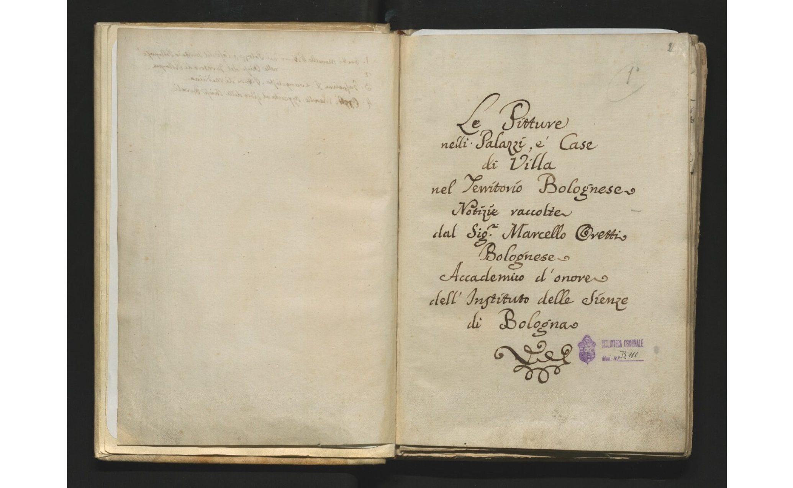

I tre manoscritti redatti da Marcello Oretti rappresentano una straordinaria fonte di informazioni sul collezionismo d’arte a Bologna nel corso del XVIII secolo. Documentano le collezioni presenti in numerose case di nobili, cittadini e artisti a Bologna e nella campagna limitrofa.

Manoscritto B104
Le pitture che si ammirano nelli palaggi e case de nobili della città di Bologna.
Vai alla scheda
Manoscritto B109
Descrizione delle pitture che ornano le case de cittadini della città di Bologna.
Vai alla scheda
